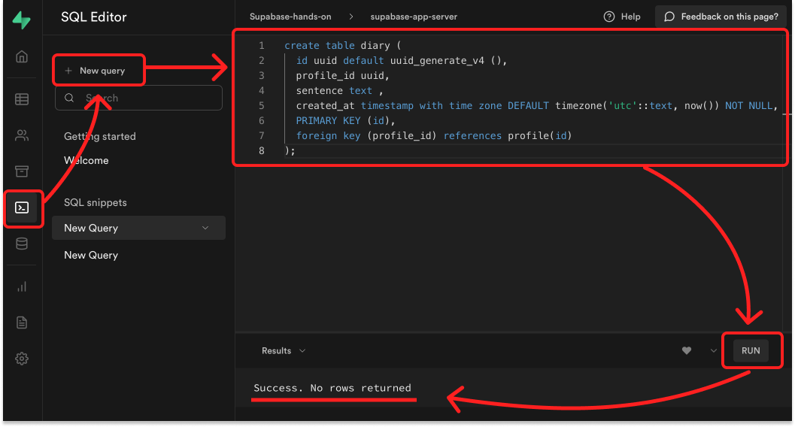
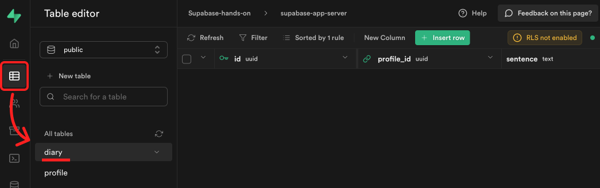
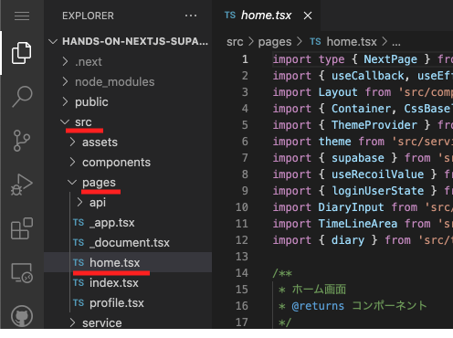
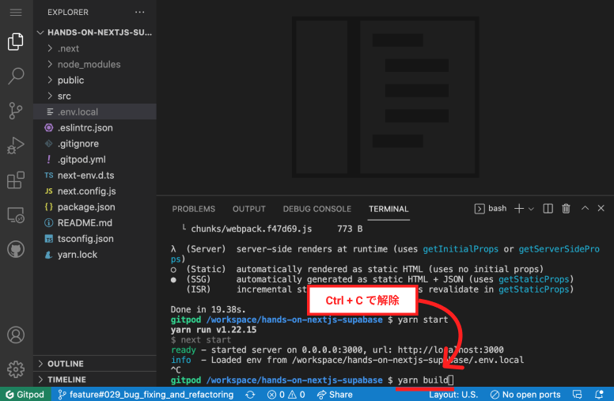
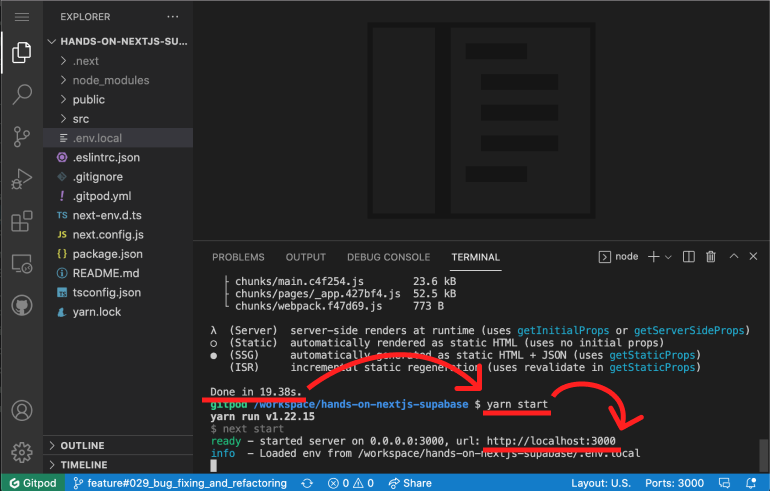
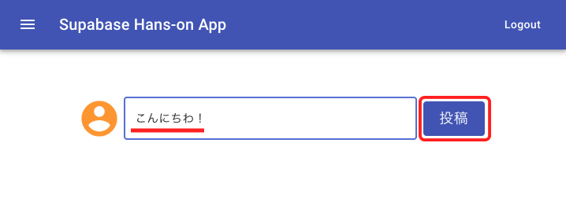
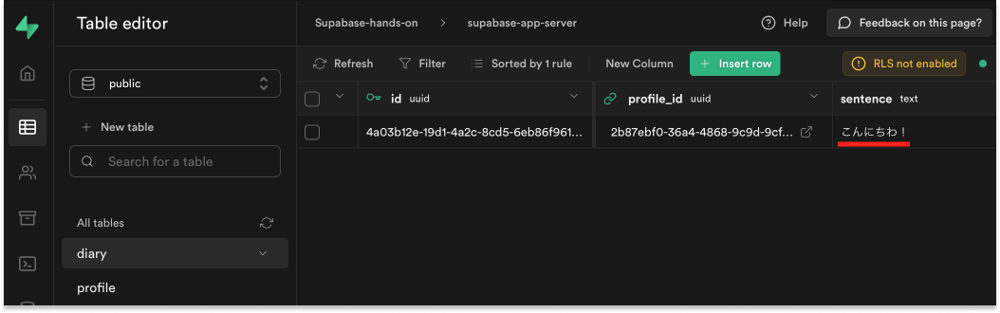
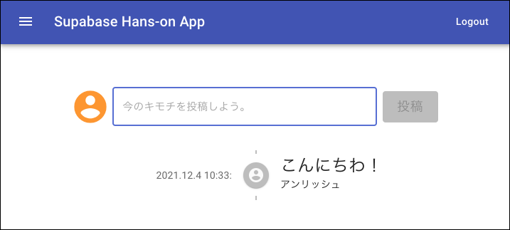
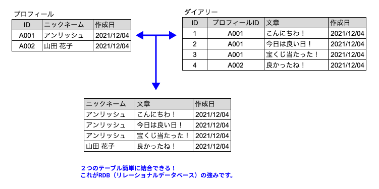

７．投稿ページ
プロフィールを登録するためのテーブルを作成後、実際に登録作業をしていきます。
✅ Supabase に、投稿用のテーブルを作成
① SQL を実行して、テーブルを作成
- 左の SQL をクリック
- New query をクリック
- 右に表示されたエディタに、以下の SQL を貼り付け
- RUN をクリック
- Success. No rows returned と表示されていれば成功！
create table diary (
id uuid default uuid_generate_v4 (),
profile_id uuid,
sentence text ,
created_at timestamp with time zone DEFAULT timezone('utc'::text, now()) NOT NULL,
PRIMARY KEY (id),
foreign key (profile_id) references profile(id)
);

② テーブルが作成されてるか確認
- 左の Table をクリック
- diary テーブルができていれば成功！

✅ フロント(Next.js)から、投稿する。
① src → pages → home.tsx を開いてください。

② 25〜31 行目にある、以下のコードのコメントを解除してください。
// ７.投稿ページ - 投稿の登録処理
const { error } = await supabase.from("diary").insert([
{
profile_id: loginUser.id,
sentence: sentence,
},
]);
error && console.error(error);
③ yarn build → yarn start をしてください。
ターミナルにて、一度 Ctrl + C を押して、サーバーを解除します。
その後、yarn build と入力して、エンターを押してください。

Done という文字が確認できたら、 yarn start と入力してエンターを押します。
表示された http://localhost:3000 に、カーソルを合わせて「Ctrl+左クリック」を行い、ブラウザにアクセスしてください。

④ ホーム画面で、適当に文字を入力後、登録するをクリック

⑤ Supabase の diary テーブルにデータが登録されていれば成功！

✅ 投稿の内容を表示する。
① 38〜50 行目にある、以下のコードのコメントを解除してください。
// ７.投稿ページ - 投稿の表示
const { data } = await supabase
.from("diary")
.select(
`sentence,
created_at,
profile (
name
)
`
)
.order("created_at", { ascending: false });
setTimeline(data);
② yarn build → yarn start をしてください。
ターミナルにて、一度 Ctrl + C を押して、サーバーを解除します。
その後、yarn build と入力して、エンターを押してください。
Done という文字が確認できたら、 yarn start と入力してエンターを押します。
表示された http://localhost:3000 に、カーソルを合わせて「Ctrl+左クリック」を行い、ブラウザにアクセスしてください。
③ ホーム画面先程投稿した値が表示されます。

🤔 RDB(リレーショナルデータベース)の強み
profile と diary テーブルを合わせて、ニックネームと文章を表示させています。

メリット
- もしニックネームを変更した場合でも、過去の投稿に表示されるニックネームも一緒に更新されます。
- 項目を追加も簡潔にでき、必要な項目が把握しやすい。